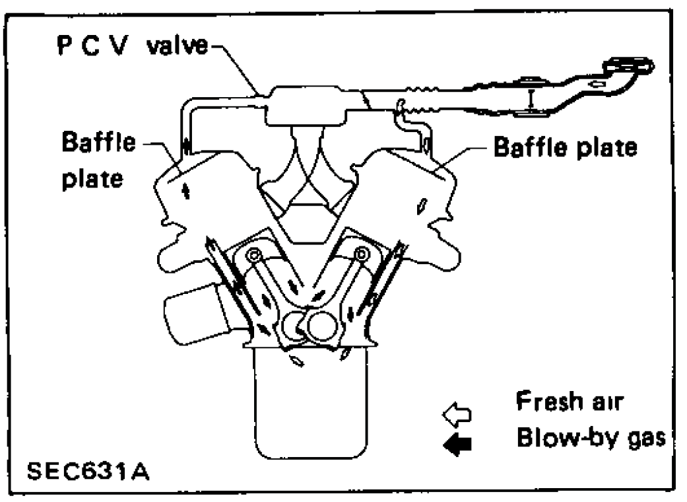
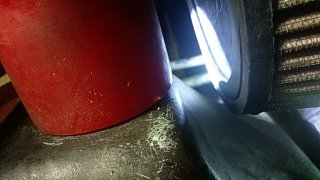
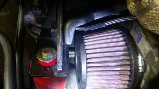

-
OK, when I test fit it, I will see about shaving motor mount stufffff.Careless;345097 wrote: that should fit perfect. again- you MIGHT need to shave the side of the engine mount that's double welded so it will be ok. you can even weld it back up and grind it down because the factory welds are cold so they didn't even penetrate well. it will fit for sure…
but what are you doing for crank case ventilation?
Here is my current setup. You can see that on the passenger side, the breather goes to a catch can then to a PCV valve.
Driver side is just a regular breather.
-
hmmmm. although I am running vc filter as a band-aid on my motor until I redo the engine bay plumbing and whatnot on the 88T, I don't think it's the ideal. you have unmetered air entering your intake via the pcv valve.
Also, mounting your hood sensor for your alarm where you have it is less than ideal as well. Can easily be defeated with a couple of test tries, even though it's further inboard of the fender drip rail. the best spot would be right near the hood center latch… it's nearly impossible to get to unless someone removes your lower drip tray and sticks their hand up in there, which on a lowered car is more than likely not going to happen.
(and clean your plastic jugs with some diluted phosphoric acid or something. them tings is grimey!!!) -
How does he have unmetered air through pcv valve? looks to me like a closed loop with no breather on the catch can.Usual Z31 suspect: Garage Queen (aka broken)

-
Is your turbo a 3inch or 4inch inlet?
amreboot;345095 wrote: The RC-8180 actually has a higher surface area than the RU-2510. I did the math on that.
Here is the filter. It is a 4" offset filter. According to my calculations and measurements, it should fit just fine!
I am awaiting my solid motor mounts to test fit it.
Black 1986 300zx Turbo coupe (Chuki)
http://z31performance.com/showthread…86-Turbo-Coupe
----------------------------------------------------------------------------------------------------------------
Pewter 1986 300zx N/A 2 Turbo 2+2 (Chuki)
http://z31performance.com/showthread…9;s-1986-300zx -
unmetered air comes through the driver side of the motor through the valve cover, goes into the crank case as the crankshaft turns downward, drawing air in, and comes out through the passenger side, through the catch can, and into the pcv valve.300zxturboftw;345143 wrote: How does he have unmetered air through pcv valve? looks to me like a closed loop with no breather on the catch can.
the side which has the downward motion of the crankshaft draws in air. the side with the upward motion expels it. (if blowby is not an issue with the motor to begin with)
that's how crankcase ventilation works. if you think it's closed loop- then you're mistaken as to what closed loop is. the breather on the driver side valve covers makes it open to atmosphere.

notice the throttle plate near the intake plenum, and the small line (MAF) that's situated further out close, to the filter.
the same diagram can be found in nissan, toyota, honda, and gm V-engine factory service manual pages. -
Its a 4 inch, hence me getting the 4" filter.Crazy;345145 wrote: Is your turbo a 3inch or 4inch inlet? -
Lol I know I've asked this many times.Careless;345153 wrote: unmetered air comes through the driver side of the motor through the valve cover, goes into the crank case as the crankshaft turns downward, drawing air in, and comes out through the passenger side, through the catch can, and into the pcv valve.
the side which has the downward motion of the crankshaft draws in air. the side with the upward motion expels it. (if blowby is not an issue with the motor to begin with)
that's how crankcase ventilation works. if you think it's closed loop- then you're mistaken as to what closed loop is. the breather on the driver side valve covers makes it open to atmosphere.
notice the throttle plate near the intake plenum, and the small line (MAF) that's situated further out close, to the filter.
the same diagram can be found in nissan, toyota, honda, and gm V-engine factory service manual pages.
Confirming.
- the air will circulate if you have both valve covers running to the catch can,
and then the hose on top running to the pcv valve.
This is the ideal way, correct?http://z31performance.com/showthread…2-2-(-now-NA2T
My build thread (: -
You're right careless…I didn't see the drivers side filter on top and now I know why my cylinder 3 ran lean at idle. Thanks.
Believe stock set-up has drivers side to a metered vacuum source which routes back into the PVC, basically doing a great job of keeping pressure out of the crank case but also throwing oil and blowby gases straight into the intake. Ideally you would want a vacuum source to drivers side and route it as armboot has done on passenger side through catch can. Unfortunately for those of us running blow-thru mafs with the filter right on the turbo housing this is impossible for me.Usual Z31 suspect: Garage Queen (aka broken)
-
PCV setup having unmetered air entering seems irrelevant to me being hes not running a stock tune, and the car was tuned like that. Technically you could make a tube for some of the air to bypass the MAF, then tune it…it'd still run properly if its tuned that way.- VG30DET (HE341) 86 300ZX - 1982 280ZX Turbo - Headered NA 1986 300ZX 2+2 - 2000 Xterra - -
I got the new motor mounts in and I was able to quickly slap on the K&N filter without any problems.
There is plenty of room all around the filter. I would say its a perfect fit!
-
Looks good dude!- VG30DET (HE341) 86 300ZX - 1982 280ZX Turbo - Headered NA 1986 300ZX 2+2 - 2000 Xterra - -
Could have bought one about 1" longer too…now you know for next time! Looks like it should flow plenty of air.Usual Z31 suspect: Garage Queen (aka broken)
-
Yea! I agree.300zxturboftw;346245 wrote: Could have bought one about 1" longer too…now you know for next time! Looks like it should flow plenty of air.
I don't know too much about flow rates of filters.
Do you think this size of a filter will flow enough? Dumb question probably, but just wanna make sure its not restricting anything. -
The best test you can do is do a pull with the filter on then take the filter off and do a pull. If the car feels noticeably faster then you know you are restricting maximum flow. Don't put a screen on when doing the test pull with the filter off. I doubt you will see a difference, maybe a few hp's on a dyno, but your butt dyno should be in the same neighborhood.Usual Z31 suspect: Garage Queen (aka broken)
-
CLEAR! - ZAP!
Sir, we've got a pulse..
K&N RU-2510
HX35W in stock location
requires the fwd engine mount to be removed, and the engine raised a few inches for install/removal
filter spec info: http://www.knfilters.com/search/prod…x?prod=ru-2510
 

Copyright © 2006–. All rights reserved. Privacy Policy